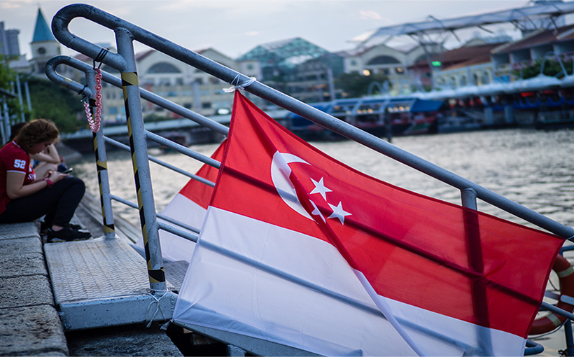
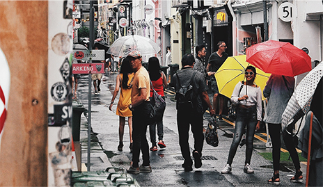

Singapore
整った美しい街並みと多民族が
共存する国



整った美しい街並みと多民族が
共存する国
92 Strand Rd., ヤンゴン ミャンマー
Building No. 19/43,
Sun Pat Street Pabedan Township, ヤンゴン

Ngwe Saung Village, Pathein Division, グエサウン, Ayeyarwaddy,